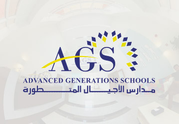
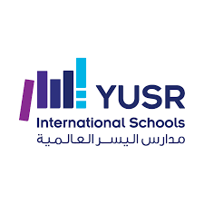

Advanced Generation School
The Advanced Generations International Schools (AGS) was established in 2008. In last ten years AGS has become one of the most renowned private international schools in Jeddah, Saudi Arabia, with quality education and outstanding students. AGS students achieved the highest IG score in Jeddah 2018.
As a private international school with around 3000+ pupils on role, AGS caters for students from pre-, primary through the end of secondary school.

Albayan Ideal School
Al-Bayan School offers an education for its students that aims to elevate the educational process and develop its students’ abilities, talents and personalities. Teachers are recruited based on their education, expertise and passion for education.
To remain on the forefront of modern teaching methods, our teachers are continuously trained by attending workshops and conferences in Education. In addition, the school seeks to provide its students with the best learning environment both within and outside the classroom.

Alyusr International School
Yusr International School’s mission is to produce a generation of distinguished leaders and constructive distinguished members of society. Through your virtual website tour, you will discover the exceptional, multilingual, and the international education that YIS provides their students. The school’s MOTTO is:
“Learners today… Pioneers tomorrow”. YIS is committed to deliver a comprehensive international educational program that will enable our students to be life-long learners, through improving their knowledge, deepening their critical thinking, enhancing their ethics and communication skills.